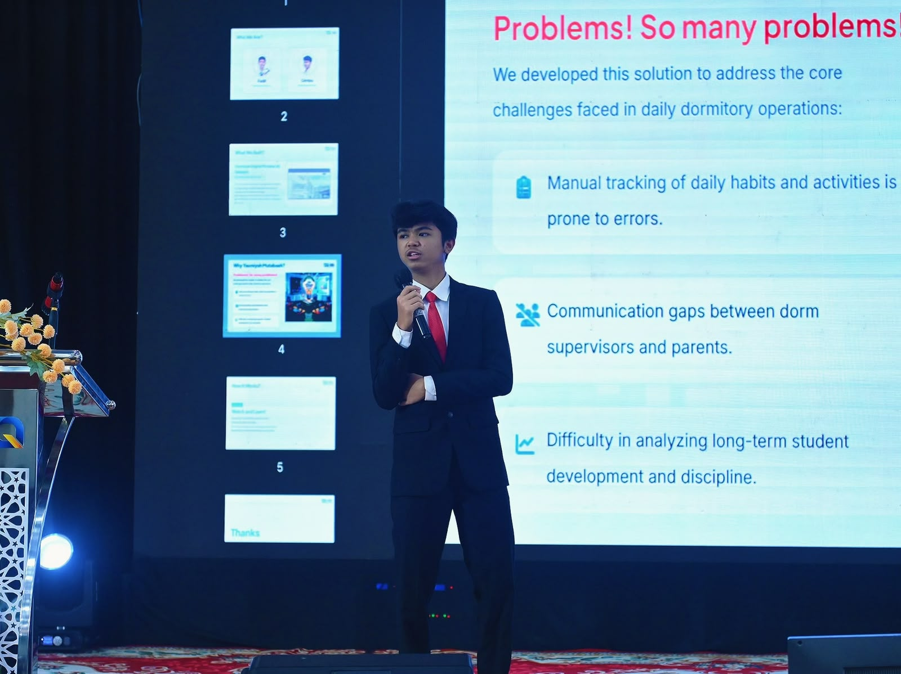

Clarity before decoration.
Start with the purpose, content and structure. Let the visual language support what the experience needs to do.
Independent digital practice Bekasi — Jakarta · ID
FIELD NOTES / 001An independent digital practice by Muhamad Fadil.
I build websites, design interfaces, and experiment with browser-based visuals and interactions.
01The Studio
INDEPENDENT DIGITAL STUDIO
SoftSpace is an independent digital studio founded by Muhamad Fadil, exploring the space between web development, interface design and creative code.
It brings practical website work and open-ended experiments into one practice. Each project is an opportunity to make something useful, understand a problem more clearly and discover a better way to shape the experience.
Start with the purpose, content and structure. Let the visual language support what the experience needs to do.
Animation should guide, respond or reveal something. It should never get in the way of using the website.
Client-facing work and experimental builds belong side by side. Both are ways to learn by making.
MEET THE FOUNDERThe person behind SoftSpace
One founder. A hands-on practice. Room to explore.

FOUNDER · DEVELOPER · CREATIVE CODER
I'm the founder and developer behind SoftSpace. I enjoy building websites from the ground up and exploring how design, code, interaction and experimentation can come together.
My work moves between frontend development, interface design and browser-based experiments. SoftSpace is where I put that curiosity into practice: building projects, refining ideas and documenting the process while continuing to learn.
02Founder Journey
2023 — 2026
A record of what I actually shipped, in order. Dates come from public repository activity, not from estimates.
Compiled from the public repositories I built while learning. The 2023 start is confirmed by me; no public repository from that year survives. Where GitHub shows only a single commit, the entry describes the work without inflating it.
03Capabilities
Select a technology for context
Capabilities are a living practice, not a claim of mastery. The labels below distinguish tools used in projects from technologies currently being explored.
04Services
What SoftSpace can help with
Focused digital services for people and small teams who need a considered web presence or a more expressive interface.
Purpose-built websites that communicate clearly and work across screen sizes.
Visual systems and page structures that make information easier to understand.
Small interactive details that give a digital experience its own character.
PROCESSOur approach
Understand the goal, audience and real problem to solve.
Set the structure, content direction and visual language.
Develop the interface, interactions and responsive behaviour.
Test, review and prepare the experience for launch.
05Selected Work
05 selected projects
07Contact
Tell me what you are trying to make, what is not working yet, or where you need a second perspective. Start with a brief — we can shape the details together.
FAQBefore we begin
A starting point for common project questions. Specific scope, timing and availability are discussed after the brief.
Current focus includes landing pages, company profile websites, personal portfolios and product or service showcases. Scope is agreed before work begins.
Yes. Existing logos, colors and brand direction can be used as the starting point. The interface is then shaped around the content and goals.
Send a short brief using the inquiry form. We can clarify the audience, pages, features, references and priorities before defining the scope.
Revision rounds and what they cover are agreed in the project scope before development begins.
Maintenance and follow-up support can be discussed separately depending on the project, hosting setup and update needs.